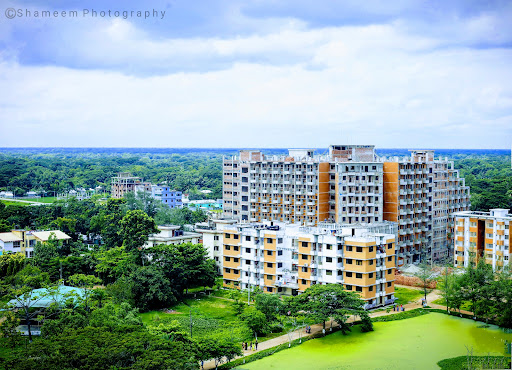

About of Jatiya Kabi Kazi Nazrul Islam University
An initiative to establish the university was undertaken at a meeting of the executive committee of National Economic Commission (ECNEC) in February 2004.[1] Former Prime Minister Begum Khaleda Zia laid the foundation stone of the university on 1 March 2005.[2] At a function on 25 May 2007, organized to celebrate the birth anniversary of National Poet Kazi Nazrul Islam, Begum Khaleda Zia inaugurated the university.[1]
The university was originally conceived to be the first culture-based university in Bangladesh, but the University Act of 2006 made it a general university with a special focus on liberal arts education and activities.[3]
Mohammad Shamsur Rahman was the first vice-chancellor of JKKNIU. Its first batch consisted of 185 students.[1] The academic programme of the university started effective from 3 June 2007 with three departments under the Faculty of Arts (Bengali Language & Literature, English Language & Literature, and Music) and the single department Computer Science and Engineering under the Faculty of Science and Engineering.[2]
Two more departments were established the next year under two new faculties: the Department of Accounting and Information Systems under the Faculty of Business Administration and the Department of Economics under the Faculty of Social Science.
Two other departments were opened in the academic year 2009–2010 under two faculties: the Department of Finance and Banking under the Faculty of Business Administration and the Department of Fine Arts under the Faculty of Arts.
Four additional departments were established in the academic year 2010–11 under four existing faculties, i.e., the Department of Dramatics under the Faculty of Arts, Department of Electronics & Communication Engineering under the Faculty of Science & Engineering, Department of Public Administration under the Faculty of Social Sciences, and the Department of Human Resource Management under the Faculty of Business Administration.